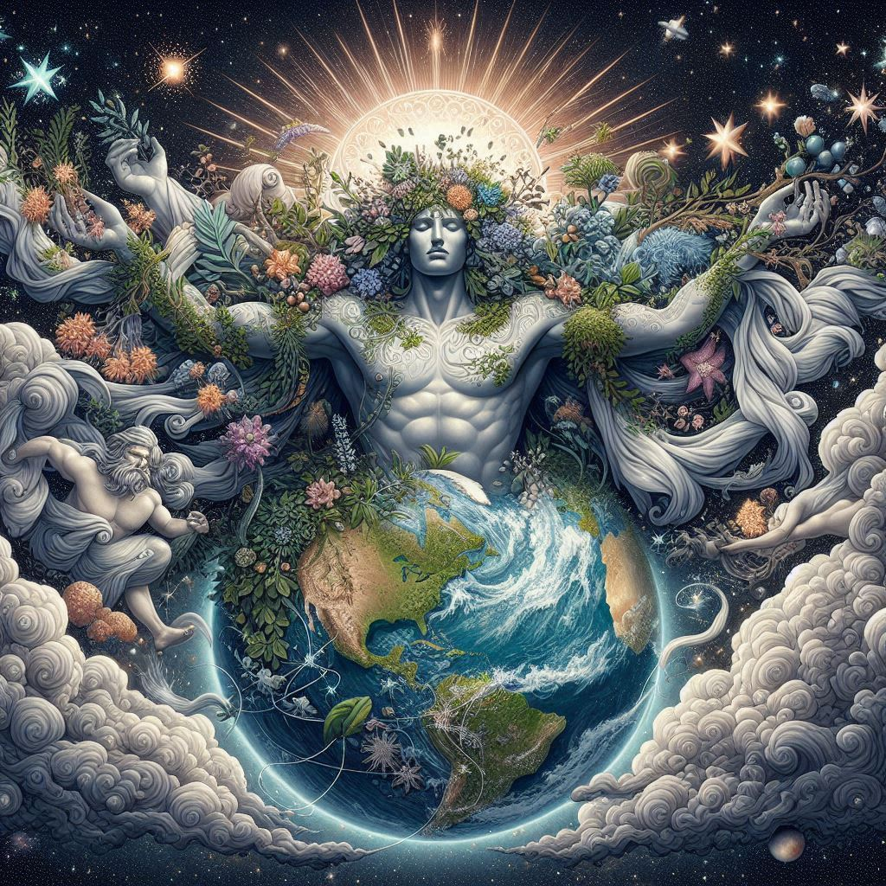

These myths, narrated in works like Hesiod's "Theogony," form the basis of Greek cosmogony, explaining not only the origin of the world and the gods but also the structure of the universe and the power dynamics among the various divine entities.
The Primordial Chaos
At the beginning of time, according to Greek mythology, there existed only Chaos, a primordial void without form. From Chaos emerged various primordial entities: Gaia (the Earth), Tartarus (the deep underworld), Eros (love and life force), Erebus (darkness), and Nyx (night).

The Birth of Gaia and Uranus
Gaia, the Earth, gave birth to Uranus, the Sky, who became her consort. From the union of Gaia and Uranus, the first divine beings were born: the Titans, the Cyclopes, and the Hecatoncheires (giants with a hundred arms and fifty heads).
The Rebellion of Cronus
Uranus, fearing the power of his children, imprisoned them within Gaia's womb, provoking her wrath. Gaia persuaded her youngest son, Cronus, to rebel. Armed with a sickle, Cronus castrated his father Uranus and freed his siblings. From the blood of Uranus spilled upon the Earth, the Furies (goddesses of vengeance) and the Giants were born.
The Birth of Zeus and the Gods' Rebellion
When Rhea bore her sixth child, Zeus, she hid him on the island of Crete and deceived Cronus by giving him a stone wrapped in swaddling clothes. Zeus grew up in secret and, once grown, forced Cronus to vomit up his siblings. Together, the rebellious gods declared war on Cronus and the Titans, a war known as the Titanomachy.
The Titanomachy
The war between the Olympian gods, led by Zeus, and the Titans, led by Cronus, was epic and devastating. After a long battle, Zeus and his allies prevailed. The defeated Titans were imprisoned in Tartarus, a deep abyss in the underworld.
The Age of the Olympian Gods
After the victory, Zeus became the ruler of the sky and the gods, Poseidon obtained dominion over the sea, and Hades took control of the underworld. Thus began the age of the Olympian gods, who dwelled on Mount Olympus and ruled the world with powers and influences over various aspects of life and nature.